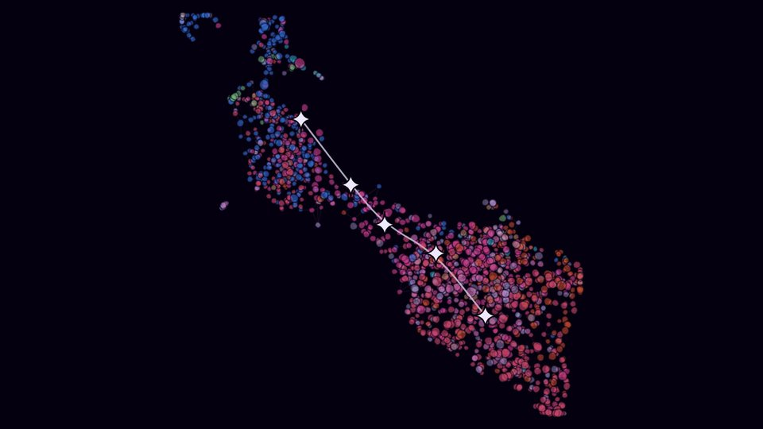

1walk the loopchoose who picks the next song (auto-play, my press, a feed, or a rule that drags every walk to one corner) and turn the dial.
1walk the loopchoose who picks the next song (auto-play, my press, a feed, or a rule that drags every walk to one corner) and turn the dial. 2the two of youdrop two listening lists and see where each of you sits.
2the two of youdrop two listening lists and see where each of you sits. 3the taste testpick the song you like more, twelve times.
3the taste testpick the song you like more, twelve times. 4the haunted nightswap a song in a real evening and watch the next few bend.
4the haunted nightswap a song in a real evening and watch the next few bend. 5the two seedstype two artists and see if their walks ever meet.
5the two seedstype two artists and see if their walks ever meet. 6undo a yeartake one year of artists out and rerun the walk.
6undo a yeartake one year of artists out and rerun the walk. 7blind or namedpick between two clips, then again with names.
7blind or namedpick between two clips, then again with names. 8the confession boothread a claim i wanted true, then the check that killed it.
8the confession boothread a claim i wanted true, then the check that killed it. 9the slow roomhear twelve songs the auto-play rule did not reach in 40 walks.
9the slow roomhear twelve songs the auto-play rule did not reach in 40 walks. 10tug of two handstwo handles pull one point. one pulls toward what sounds alike, the other toward what i played most. hear each stop.
10tug of two handstwo handles pull one point. one pulls toward what sounds alike, the other toward what i played most. hear each stop. 11telephonepick the next song from up to six; the chain grows one link per press, kept in this browser.
11telephonepick the next song from up to six; the chain grows one link per press, kept in this browser. 12the stutterhold the button: one hundred plays, one color per starter, back to back.
12the stutterhold the button: one hundred plays, one color per starter, back to back. 13meet in the middletwo fingers on the map; the shape halfway between you lights and plays.
13meet in the middletwo fingers on the map; the shape halfway between you lights and plays. 14hold to keeptwelve songs, hold to keep one, let go to skip; kept songs stay lit.
14hold to keeptwelve songs, hold to keep one, let go to skip; kept songs stay lit. 15shake the shuffleshake the phone and shuffle leaps across my map.
15shake the shuffleshake the phone and shuffle leaps across my map. 16the pourtilt your phone to pour your own picks against auto-play's, 100 steps at a time.
16the pourtilt your phone to pour your own picks against auto-play's, 100 steps at a time. 17clap to skipclap and the song skips; quiet keeps it. the screen reads loudness only.
17clap to skipclap and the song skips; quiet keeps it. the screen reads loudness only. 18draw the long waydrag from shape to shape, then see how short the shortest way was.
18draw the long waydrag from shape to shape, then see how short the shortest way was. 19where you landtype artists you like and see where they land on my map.
19where you landtype artists you like and see where they land on my map. 20scrub by eardrag across the dim map and hear each artist light up.
20scrub by eardrag across the dim map and hear each artist light up. 21the long holdpress and hold for a minute while the map settles around you.
21the long holdpress and hold for a minute while the map settles around you. 22family crossingsone night as a colored line, one color per genre family. tap a bend to hear the jump between families.
22family crossingsone night as a colored line, one color per genre family. tap a bend to hear the jump between families. 23draw a radiodraw a curve on my sound map; it becomes a radio of stops, in order.
23draw a radiodraw a curve on my sound map; it becomes a radio of stops, in order. 24whose fingerhear two plays in a row and guess who pressed the second: me or auto-play.
24whose fingerhear two plays in a row and guess who pressed the second: me or auto-play.
25the chorustap artists to add your marks; they stay in this browser. on a shared gallery screen, earlier sets show as white stars.